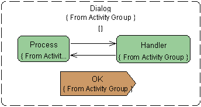

.
.The UML Modeling feature lets you add a Signal to an Object Node. The Signal is an Object Node that fires an event to another invocation or object that terminates the tokens in the Activity Group.
To add a signal:
.In the following example, the Signal is named OK.
